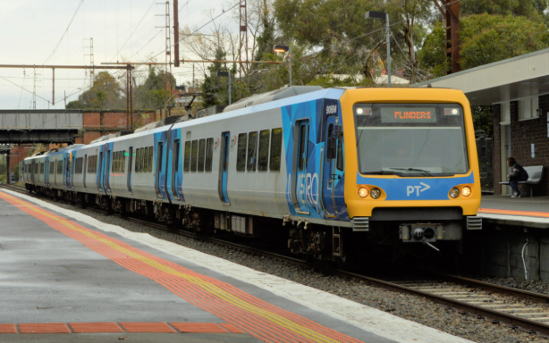
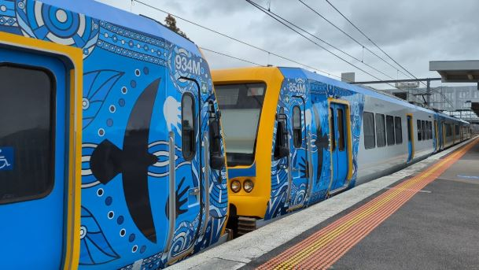
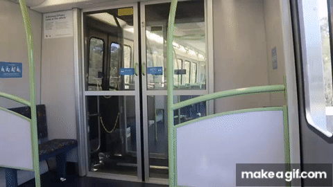

X'Trapolis 100 Fleet
The X’Trapolis 100 trains are a modern electric multiple unit (EMU) fleet operating across several of Melbourne’s suburban lines. Manufactured by Alstom and introduced from 2002 onward, these trains were designed specifically for Melbourne’s network, incorporating lessons from previous fleets to improve efficiency, accessibility, and passenger flow. The X’Trapolis 100 is often associated with high-frequency, short-to-medium-distance suburban services and is appreciated for its reliability and quick acceleration.
These are the most common and recognisable melbourne train, and are used almost completely on the right side of the metro trains network, which includes Belgrave, Lilydale, Alamein, Glen Waverley, Hurstbridge and Mernda
Over the years the fleet has received:
Minor interior refurbishments (new upholstery, lighting improvements),
upgraded communications and monitoring systems and
improvements to safety and accessibility features. As some of the fleet was ordered in 2002 up until 2020, most of the oldest carriages needed refurbishments

Information and Statistics
Introduced: 2002–2015, ordered up until 2020
Built by: Alstom, Ballarat (assembled in Victoria with components from Europe)
Number built: 212 carriages (forming 106 three-car sets, ran in six-car formations)
Operator: Metro Trains Melbourne, originally ordered by "Connex"
Design: Lightweight stainless steel, bright interiors, digital signage, and wide vestibules
Power system: 1,500V DC overhead
Configuration: 3-car units (M–T–M) paired into 6-car sets
Top speed: 130 km/h
Length per 3-car unit: ~72 meters
Passenger capacity: Around 432 seated per 6-car train, with large standing areas
2 3 Car sets got a special aboriginal livery (Below), only this xtrapolis pair and a 7 Car HCMT have recieved one

Credit to Strayatrains on youtube
controversies and challenges
Even though these trains are the most common and pretty reliable. They are one of the most controverisal trains and are disliked by commuters and train enthusiasts.
They were a cheap design ordered from europe, unlike all the others (discluding the siemens nexas) that were made mostly or fully in Melbourne. This lead to a bunch of compatability problems and issues over the years
The main problem with them is their ride quality and suspension, even though they were ordered up until 2020, they kept the 2002 suspension design, which was a step down from the comengs air suspension (that was made in 1981.... 🤣) Passengers and drivers have long complained about the harsh suspension and bumpy ride and gave it the nickname "XTrampoline", especially at higher speeds or on older track sections. Drivers reported fatigue from the rough ride, and passengers experience discomfort, particularly while standing.
X’Trapolis 100 trains can only operate on certain parts of the network due to infrastructure limitations, including track curvature, platform height, and signalling systems. Lots of the track and signalling had to be moved or changed when the xtrapolis were first tested
The X’Trapolis trains are prone to wheel flat spots, a condition where the wheels develop flattened sections from skidding during braking. The wheels can also spin when the track is wet

A GIF OF THE XTRAPOLIS' POOR SUSPENSION, CREDIT TO taitset on youtube
Metro trains fleet is a website made in a VET class, not official.